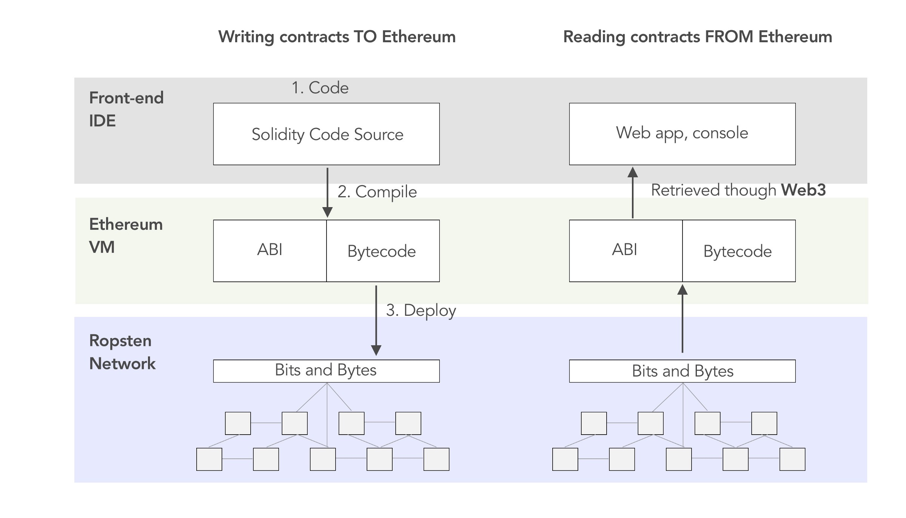
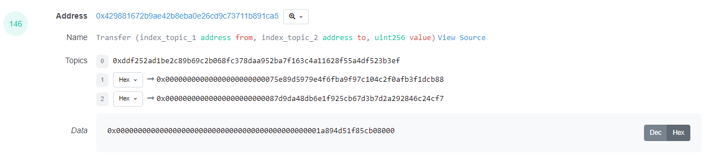

Decoded Tables
Instead of working with the transactions, logs, and traces in their raw states, on Dune we decode smart contract activity into nice human-readable tables.
We create tables for each event and function defined in the smart contract's ABI(Application Binary Interface). Subsequently, every event, message call or transaction made to that contract is decoded and inserted as a row into these tables.
The tables are named accordingly:
events: [projectname_blockchain].contractName_evt_eventName
function calls: [projectname_blockchain].contractName_call_eventName
As an example, decoded data for the swap-event of the Uniswap V2 pair contract on Ethereum is found in the table uniswap_v2_ethereum.Pair_evt_Swap.
events: [projectname]."contractName_evt_eventName"
function calls: [projectname]."contractName_call_eventName"
As an example, decoded data for the swap-event of the uniswap V2 pair contract is found in the table uniswap_v2."Pair_evt_Swap".
If a contract has multiple instances, we will decode all of them into the same table, you will be able to identify the specific smart contract using the contract_address column.
Since all chain's data resides in one database, but the multichain world is a reality, contracts on Dune have a meta attribute that describes which blockchain this specific table is pulling the data from.
Read more about the difference between calls and events here:
Which contracts have decoded data?¶
You can check if contracts are already decoded by querying [blockchain].contracts tables through our database or use this dashboard.
You can check if contracts are already decoded by querying "[blockchain]".contracts tables through our database or use this dashboard.
If the contract is not in our database yet, you can submit them here:
It usually takes about 24 hours to initially decode smart contracts, and you can check to see if your contract has been decoded yet here:
Once a contract has been added to our Decoded Contracts system, you can check this dashboard to see the current delays between block published to decoded data ready for querying:
Read more about submitting contracts for decoding in this section:
How does decoding work?¶
Smart Contracts on any EVM blockchain are mostly written in high level languages like Solidity or Vyper.
In order for them to be able to be deployed to an EVM execution environment, they need to be compiled to EVM executable bytecode. Once deployed, the bytecode gets associated to an address on the respective chain and is permanently stored in this chain's state storage.
To be able to interact with this smart contract, which is now just bytecode, we need a guide to be able to call the functions which are defined in the high-level languages. This translation of names and arguments into byte representation is done using an Application Binary Interface (ABI).
The ABI documents names, types, and arguments precisely which allows us to interact with the smart contract using a somewhat human readable format. The ABI can be compiled using the high level language source code.
The ABI is used to call a smart contract or interpret the data it emits.

An Example¶
We are going to look at an event log of an ERC20 transfer event from the smart contract that represents the $PICKLE token.
On Etherscan the undecoded event looks like this:

If we query for this transaction in the ethereum.logs table in the dune database, we will receive the same encoded bytecode as our result dataset.
Now this is not at all helpful to analyze data.
Using the contract's ABI we can convert this encoded bytecode to decoded data.
The event log we are looking at here is from the $PICKLE ERC20 token transfer event log.
Since this table is decoded on Dune, we can query the table in Dune to receive the decoded information:
Now this is actually useful for analyzing this transaction!
How exactly does this work?
Since we know which event we are looking at here, we can simply convert the encoded bytecode to decoded data by decoding the bytecode according to it's datatype.
The structure for the Transfer event log of an ERC20 token will always be:
This basically tells us that topic2 and topic3 are of the type address(32bytes) and are respectively the sender and recipient of the token transfer. An event log only has 3 indexed fields, so the data field is used to store the information about how much units of the token have been moved in this transaction. This field is called value.
Since topic1 always is just the Keccak-256 hash of the signature of the event, we are left with decoding topic2, topic3 and data.
In this case, they map out like this:
| raw data field | decoded data description | raw data | decoded data |
|---|---|---|---|
| topic1 | keccak256("Transfer(address,address,uint256)") | 0xddf252ad1be2c89b69c2b068fc378daa952ba7f163c4a11628f55a4df523b3ef | not needed, this table only contains event logs from the transfer event log |
| topic2 | from | 0x00000000000000000000000075e89d5979e4f6fba9f97c104c2f0afb3f1dcb88 | 0x75e89d5979e4f6fba9f97c104c2f0afb3f1dcb88 |
| topic3 | to | 0x00000000000000000000000087d9da48db6e1f925cb67d3b7d2a292846c24cf7 | 0x87d9da48db6e1f925cb67d3b7d2a292846c24cf7 |
| data | value | 0x00000000000000000000000000000000000000000000001a894d51f85cb08000 | 489509000000000000000 |
In summary:
We can use the contracts ABI to go from encoded bytecode to decoded data. This helps you run analysis fast and efficient as the decoded data is easy to work with.
How do I understand decoded data?¶
Decoded data is the high level programming language representation of two pieces of software talking to each other via the blockchain.
It's not always easy for a human to understand what exactly is going on in these interactions, but most of the time, looking at column names and the data that is transmitted within them should help you to understand what is happening within that specific log or call.
If you are not able to make sense of the data by just searching the tables, it usually helps to look at single transactions using the transaction hash and Etherscan.
Furthermore, actually going into the smart contracts code (our favorite way to do this is DethCode) to read the comments or the actual logic can help to understand the smart contract's emitted data.
If that also doesn't lead to satisfactory results, scouring the relevant docs and GitHub of the project can lead you to the desired answers. Furthermore, talking to the developers and core community of a project can also help you to get an understanding of the smart contracts.
In Summary:
Working with decoded data allows you deep access to information stored on the blockchain and is very information rich, but understanding that data sometimes takes a bit of effort on your side since you are interacting with the data of the contract in a direct way.
Which tables should I use?¶
Events are designed to be analyzed and stored on the blockchain to allow backward looking analysis of what is happening, transactions and message calls are made to pass information between smart contracts.
Therefore, in most cases the easiest and most accessible way to analyze various things happening on the blockchain is by looking at events.
However, there is some cases where the emitted events miss some crucial information or there is just no events that get emitted. In these cases you might have to fall back to transaction and message calls (found in call tables).
Cases where no event gets emitted get rarer over time as developers now mostly understand that events are important enough to be emitted, but they still exist. In some cases, it might make sense to combine the decoded data with raw data in order to get metadata about the transaction or dive even deeper.
Queries to explore decoded Contracts¶
See all projects we have decoded data for¶
Check for multiple instances of a contract¶
If you are working with an event or call table directly you can see if there are several instances of that contract with this query.